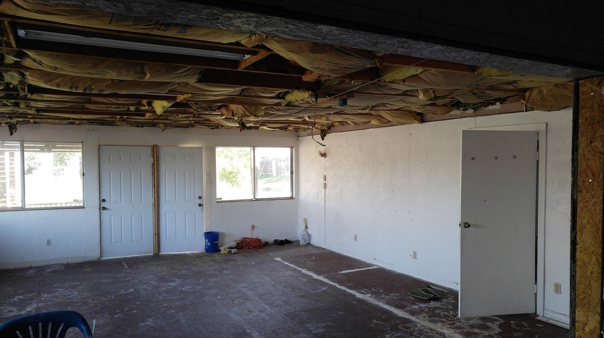
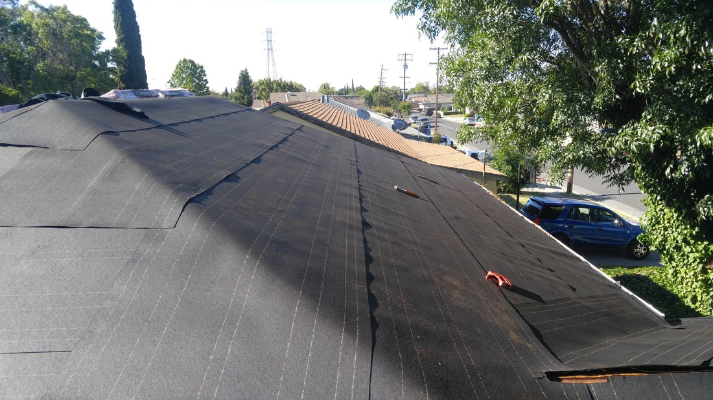
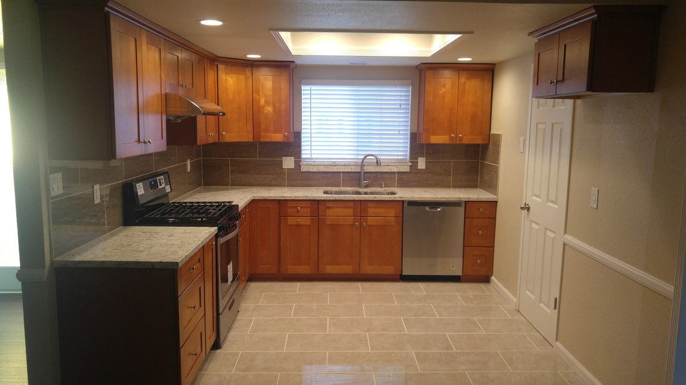
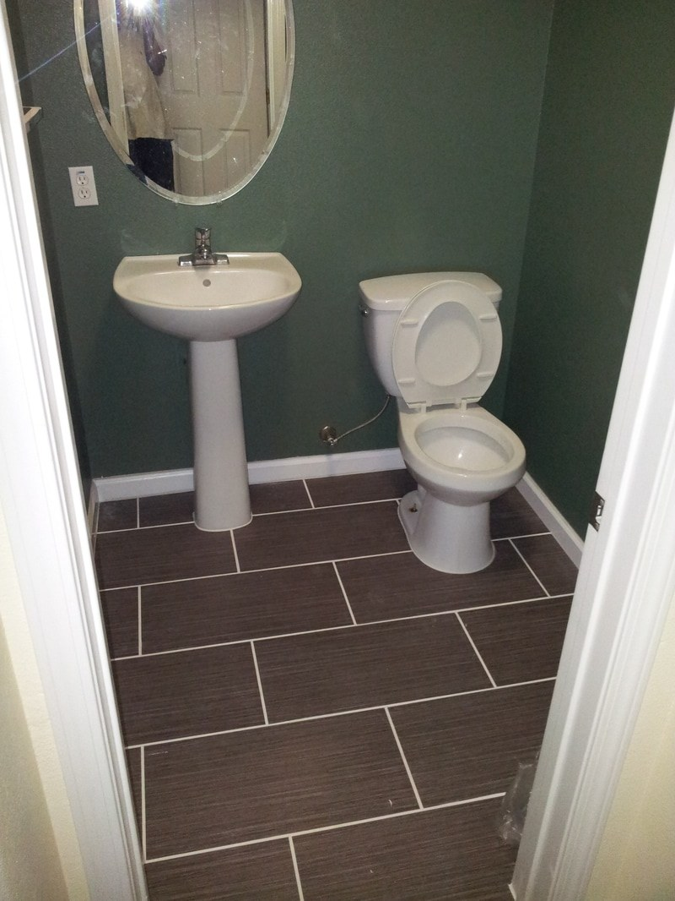
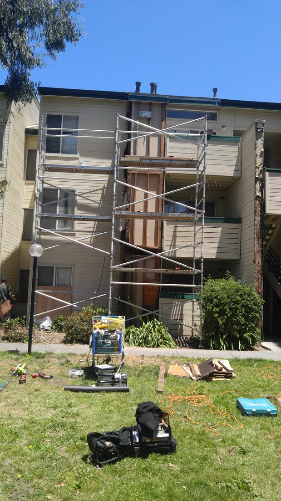
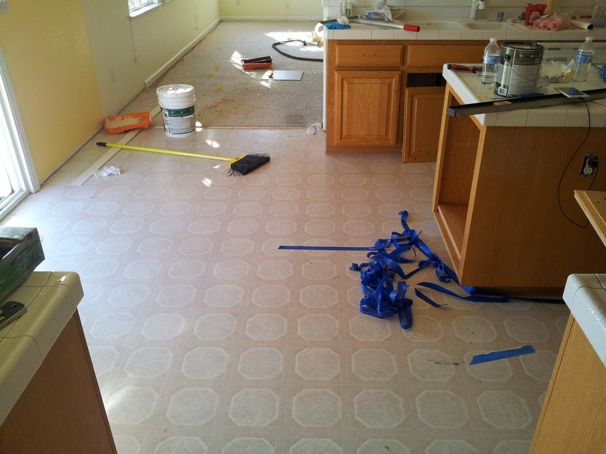
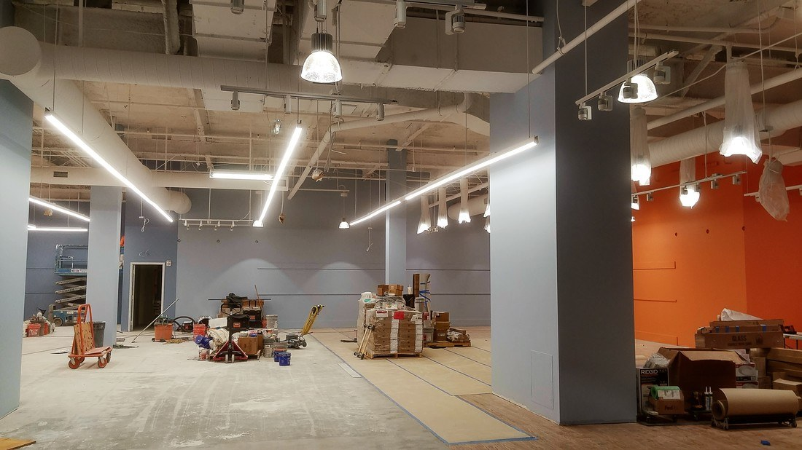

01 / STRUCTURE
Built from the inside out.
Framing and structural work that supports the finished space.
Explore kitchens, bathrooms, structural improvements and exterior projects across the San Francisco Bay Area. Licensed general contractor · CSLB #1025488.
A look at different stages and types of work from our portfolio. These are examples from separate projects, not a single before-and-after sequence.

Framing and structural work that supports the finished space.

Construction details and the work behind lasting results.

Completed spaces, finishes and thoughtful workmanship.
Browse our selected portfolio by work type. Each gallery includes the existing photos you've chosen to display.
Kitchen renovations, cabinetry, counters and finish details
Explore the gallery
30 PHOTOSShowers, tile, vanities and bathroom construction
Explore the galleryRoof preparation, replacement and completed roofing work
Explore the galleryVisible framing, structural repair and construction progress
Explore the gallery
26 PHOTOSSiding, exterior repairs, decks and outdoor construction
Explore the gallery
21 PHOTOSFlooring, finished rooms, interior repair and remodeling
Explore the gallery
12 PHOTOSCommercial interior improvements and build-out progress
Explore the galleryPlanning a kitchen or bathroom remodel, an addition, or an exterior improvement? Let's talk about your vision.
Already worked with us? Visit our reviews page →